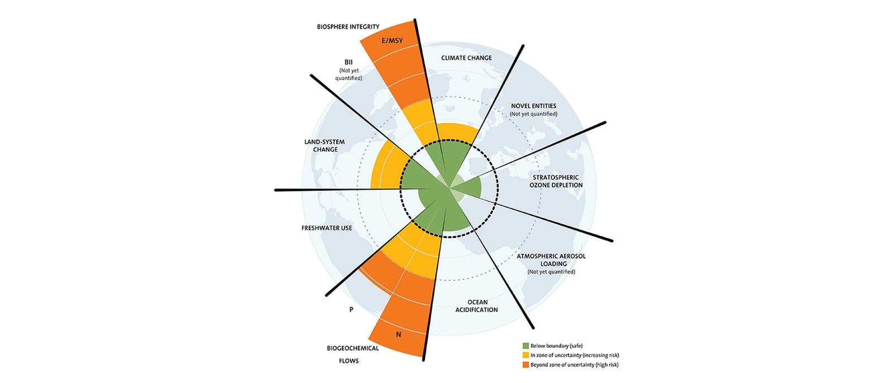
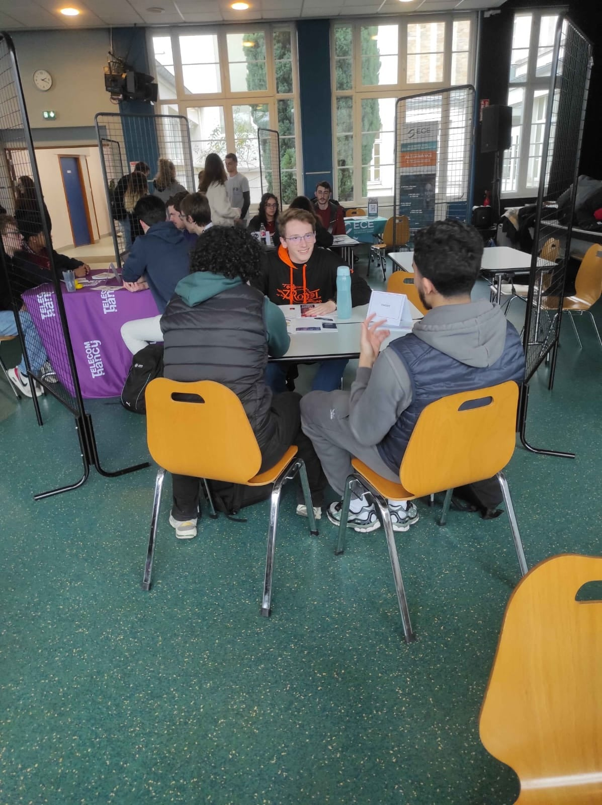
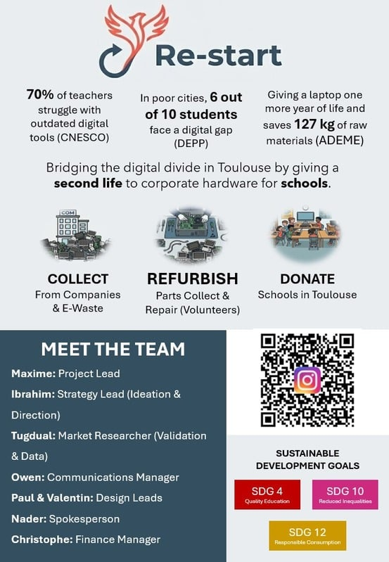

Sustainability & Civic
Engagement
Clean walk with N7 :

During the first week of my return to N7, a clean-up walk was organized throughout Toulouse. We collected more than 5 kg of waste.
Fresque du climat :
During the second week of my return to N7, an activity called the Climate Fresco was organized by Toulouse INP. With my group, we worked on the nine planetary boundaries.

Forum des métiers :

I presented ENSEEIHT on December 19, 2025, at my former high school, Claude Gellée in Épinal, where I attended preparatory classes.
Re-Start
Convinced that digital technology must be accessible and sustainable, 7 friends and I plan to launch the Re-Start project. Our mission is twofold: to reduce the environmental impact of electronic waste by refurbishing broken computers (sourced from companies, recycling centers, etc.) and to support local education by equipping schools in Toulouse. Beyond simple donations, we will provide ongoing maintenance to ensure optimal learning conditions for students.
